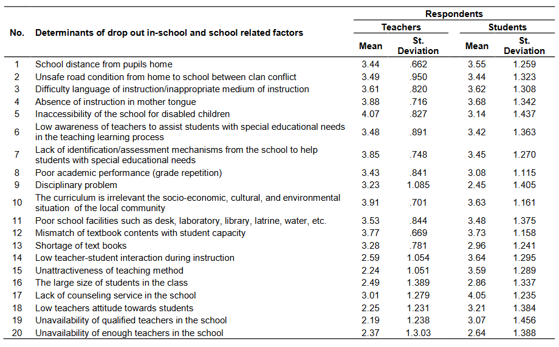
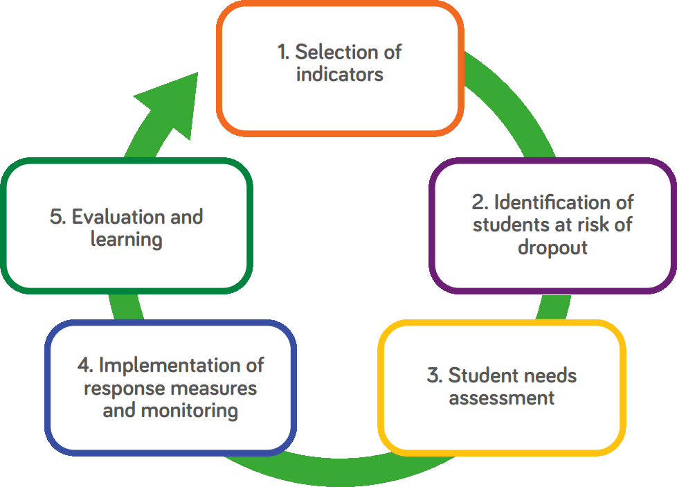
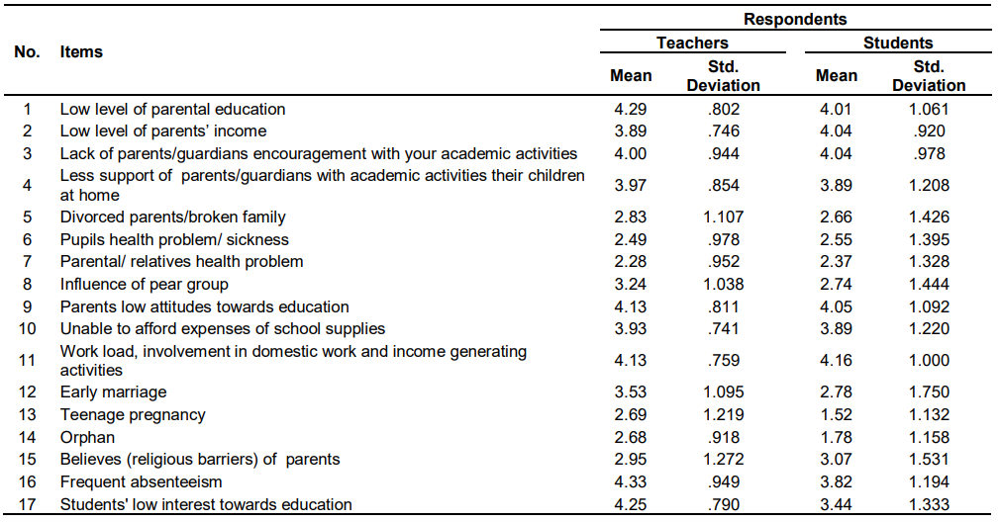

To meet the United Nation’s goal of ensuring inclusive and equitable quality education we’re going to have to transform education through technology. The most famous technologies in recent years have been machine learning and data analytics which will be important keys to unlocking the potential of many young children who live in areas where there aren’t enough educators, education is poor, hard to access or all of the above.
We’re already seeing prestigious schools incorporate these technologies and some may argue that adapting to a new educational paradigm making heavy use of data and analytics is an insurmountable task for countries, regions and states that already have issues delivering education, but if they want to catch up then they must look ahead rather than behind, or the gap will remain the same or grow.
Determinants of School Drop-Outs
Table from: African Educational Research Journal
One of the UN’s main targets is to make sure children finish their education, as the rates of completion have worryingly been stalling in recent years, so It’s important to look at how analytics can help administrators retain children in education. One way administration could take advantage of data is by using data analysis to look for certain variables that could lead to children dropping out, once they have this data, they could visualize it and find common themes among the children who are at risk. It’s believed that collecting and tracking things such as absenteeism, behaviour and academic performance is paramount to stopping children from dropping out of school(Unicef, 2018) [1] . Using and modelling such data could lead to administrators more readily being able to identify the warning signs and use a predictive function, for instance linear regression, to tackle the issue before it develops.
Early Warning Systems: The Five Steps
Image from: Unicef
Getting children to stay in school not only helps with the goal of raising school completion rates but could also help with the goal of providing equal education among the sexes as staying in school longer can have a knock-on effect and lead to an increase in gender equality(Unicef, 2018) [2] .
Out-of-School Related Factors Determining Students to Dropout
Table from: African Educational Research Journal
Another way in which administration could benefit from data analysis is by finding optimal places to place schools in remote areas. This may seem unimportant to keeping children in school, but research has shown that “School distance from home is one of the determining factors for students to dropout.”(Dagnew, 2017) [3] ; by analysing the populations in such remote areas, it would be easy to find an optimal place for a school to be built where it could serve the most children.